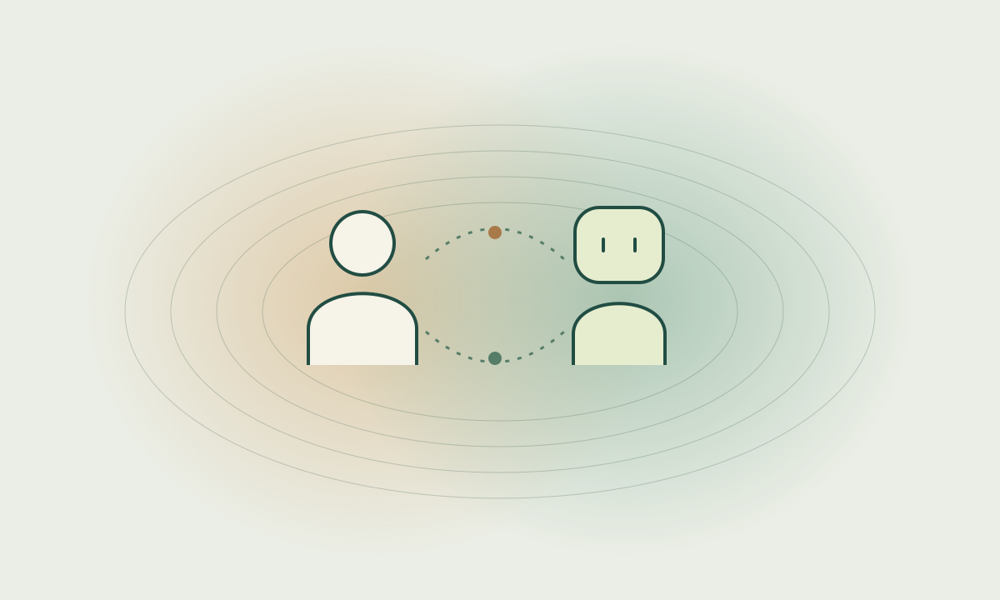
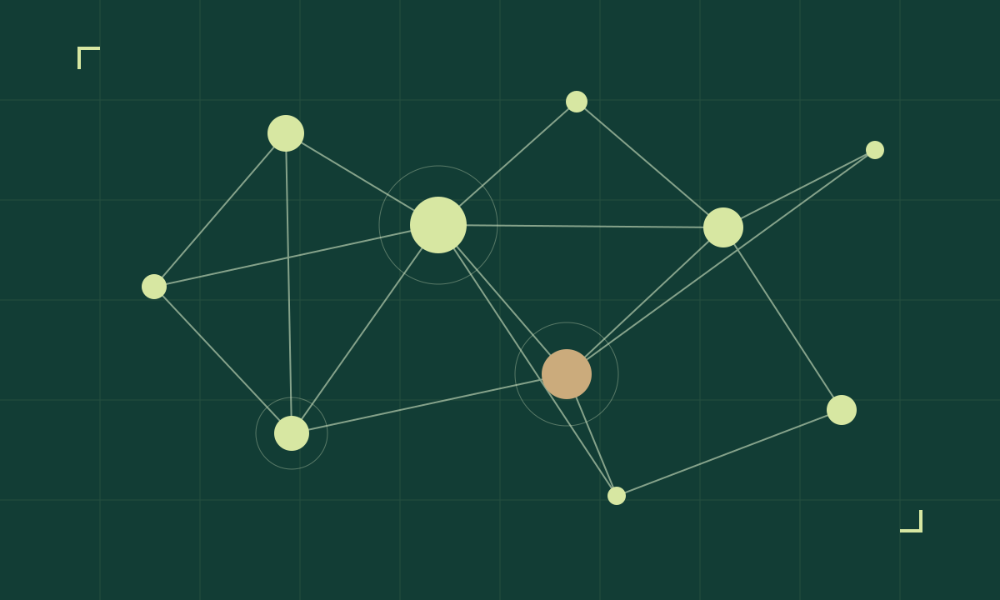

Driving support agents

- Developing agents to build new relationships between cars and drivers
- Creating a passenger effect through dialogue with an agent while driving
- Driving-status notification agents that build passenger trust during the introduction of fully automated vehicles
- Effects of driving support agents on hazard anticipation
- Improving drivers' safety-checking behavior with a coaching agent using head-orientation estimation
- Relationships between driver characteristics and overtrust in driving support robots
- Developing a companion agent that creates a passenger effect through casual conversation
- Developing an embodied agent to reduce drivers' mental workload
- Interaction design using on-board diagnostics (OBD) to build new relationships between cars and drivers
Dialogue systems

- Developing an affinity-building dialogue system using speech-level shifts based on DP theory
- Developing an affinity-building dialogue system based on politeness theory and natural conversation corpora
- A dialogue system controlling sentence endings according to speaker attributes
- Effects of compliments by conversational agents
- Developing a game-master bot for tabletop role-playing games and analyzing the effects of ambiguous utterances
- Developing a job interview support system using multimodal information
- Effects of an embodied agent's persuasiveness when recommending novels
- Developing an automated esports commentary system
- Developing a dementia care communication training system using embodied agents
Human–Agent Interaction (HAI)

- Developing educational materials through cross-cultural simulation games
- Animacy for Anything: a device that adds lifelike expressions
- Developing a dining companion agent
- Developing an announcer agent that provides information
- Developing interactive digital signage
- Developing discommunication robots
AIWolf

- Developing AIWolf agents
- Persuading human players with AIWolf
- Developing an agent that explains the situation and helps organize information in Werewolf games
- Natural utterances for AIWolf agents
- Persuasive utterances for AIWolf agents
Mood Engineering

- Improving trust in embodied agents
- Creating social atmospheres with embodied agents
- Creating an artificial atmosphere conveying familiar presence through Twitter and a social conversational robot
- Assessing sociality with an agent using egograms
Information visualization

- Using social networks to support people stranded after earthquakes
- Developing a system to prevent online backlash on Twitter
- Assessing and visualizing author activity using publication submission data
- Revealing the hidden specialties of journals through hierarchical research-field networks
- Understanding hidden specialties through research-field networks
- Analyzing networks between research fields using bibliographic information